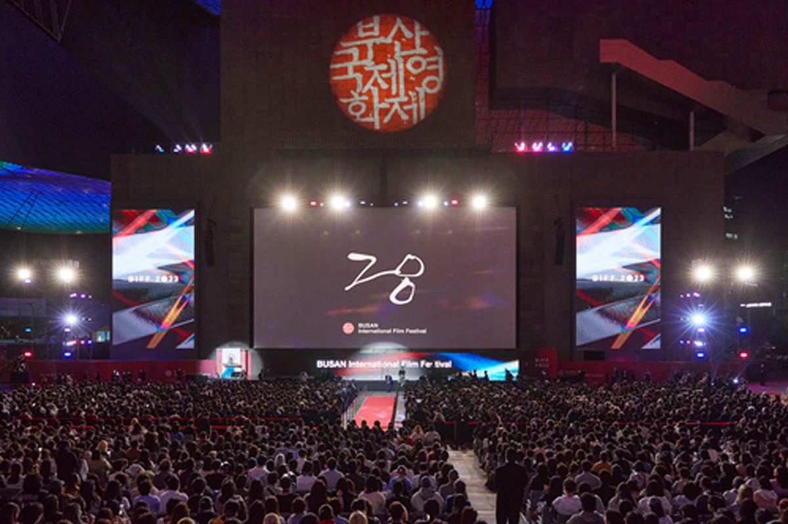
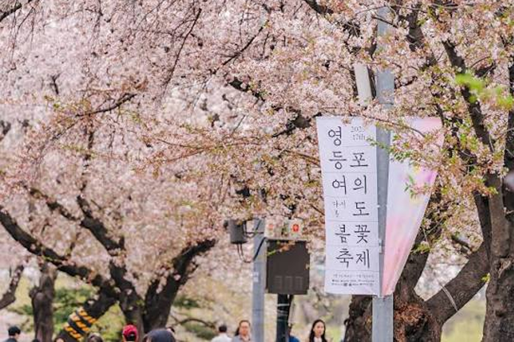
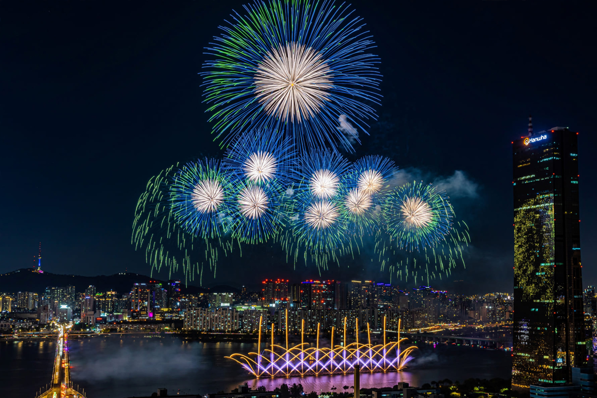
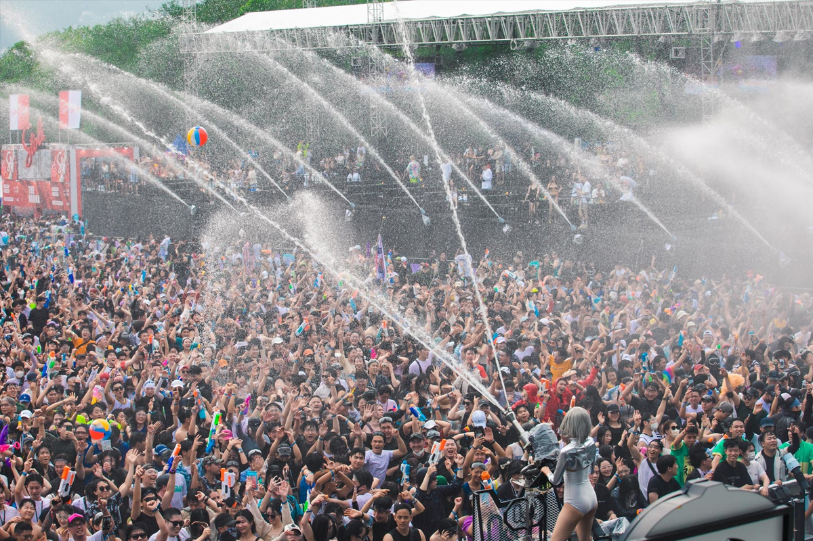
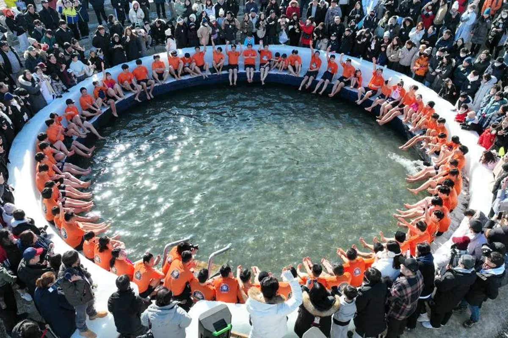
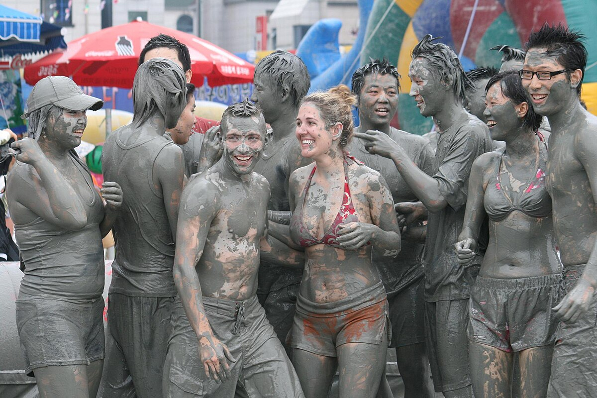
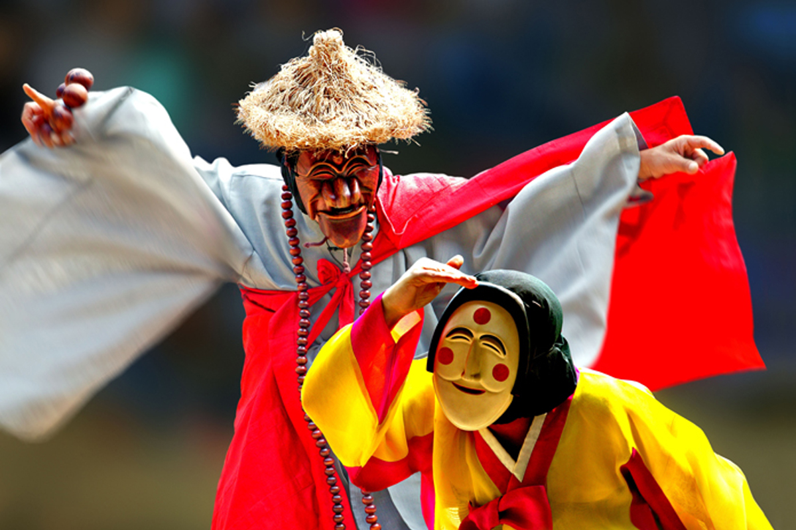
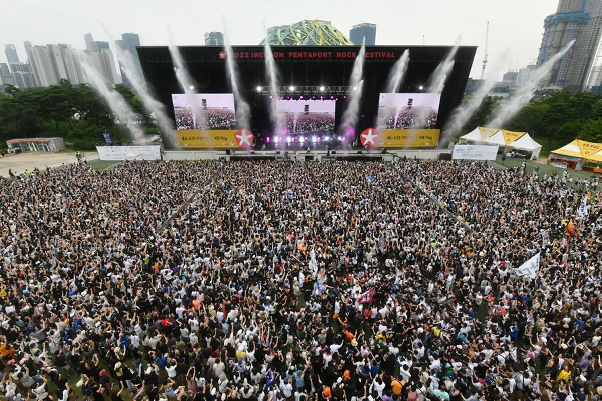
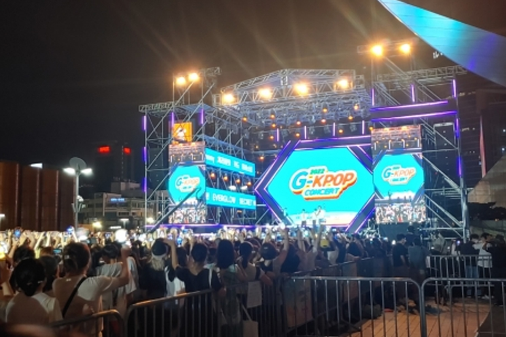

축제 및 행사
대표 축제·행사를 카드로 둘러보고, 하단 공식 안내에서 더 찾아보세요.
주요 축제·행사
카드를 좌우로 밀어 넘기듯 둘러보세요.

부산국제영화제
부산 · 10월
공식 사이트 →
영등포여의도봄꽃축제
서울 · 3~4월
공식 사이트 →부산불꽃축제
부산 · 11월
공식 사이트 →
한화 서울세계불꽃축제
서울 · 10월
공식 사이트 →
워터밤
서울·대구·부산 등 · 6~8월
공식 사이트 →
화천 산천어축제
강원 화천 · 1월
공식 사이트 →
보령 머드축제
충남 보령 · 7~8월
공식 사이트 →
안동국제탈춤페스티벌
경북 안동 · 9~10월
공식 사이트 →
인천 펜타포트 락 페스티벌
인천 · 8월
공식 사이트 →
서울 뮤직페스티벌
서울 · 10월
공식 사이트 →공식 안내
더 많은 축제는 아래 공식 안내에서 찾아보세요.